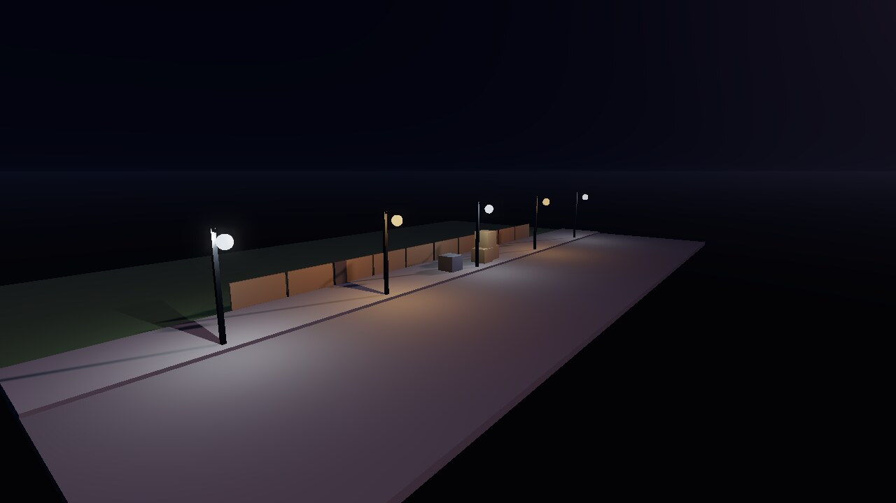

Prefabs & attributes
Attributes#
Attributes are named values that you set per entity in the Inspector and read from scripts. Use them to tune gameplay without touching code: a coin's value, an enemy's speed, a door's key colour.
Inspector → Attributes → + Add attribute asks for a name and a type:
| Type | Python value | Example |
|---|---|---|
| Bool | True / False | locked |
| Int | int | value = 10 |
| Float | float | speed = 3.5 |
| Text | str | next_level = "cave.ron" |
| Vec3 | (x, y, z) tuple | patrol_to |
| Color | (r, g, b, a) tuple | tint |
In a script, entity.attributes works like a dict:
def update(entity, ctx):
speed = entity.attributes.get("speed", 2.0)
entity.transform.translate((speed * ctx.time.delta, 0, 0))
hp = entity.attributes["health"]
if hp <= 0:
entity.attributes["dead"] = True # writes back like any other change- Attributes are saved in the scene file, so they're part of the level data.
- Writes made during Play are visible to other scripts on the next frame. They're thrown away on Stop, like every other Play change.
entity.stateis the place for private values your script doesn't want to show in the Inspector.
Prefabs#
A prefab is an entity, or a few, saved to its own file (.prefab) so you
can stamp copies of it into any scene. The copies stay linked: change the
prefab file and every copy follows.

- Save: right-click an entity → Save as Prefab…, or File → Save Selection as Prefab…. The entity's components, attributes, and attached script all go into the file, and the entity becomes the prefab's first instance.
- Use: File → Instantiate Prefab… (or double-click a
.prefabin the Files panel) drops a linked copy on the ground at the point the view is looking at.
Prefab instances show in blue in the Hierarchy.
Overrides#
An instance can differ from its prefab: tint one crate, give one enemy more health. Each field you change on an instance is an override. The instance keeps it when the prefab changes, and takes everything else from the file. Where an instance stands (position and rotation) and its name are its own, and never count as overrides.
The Inspector shows a Prefab block at the top of a linked entity:
| Apply | Writes this instance's overrides into the prefab file. Every instance gets them. |
| Revert | Drops every override: back to the prefab's values. |
| Unlink | Keeps the current values but stops following the prefab. |
| Select All | Selects every instance of the prefab in the scene. |
Below the buttons, each override is listed by name (Mesh Renderer › Color, Attributes › hp) with its own Revert button. The same commands are in the entity's right-click menu. Apply, Revert and Unlink are one undo step each.
Edit a .prefab file by hand, or regenerate it from a script, and Oberon
picks up the change within half a second. Instances update and keep their
overrides.
Variants#
A variant is a prefab built on another prefab. It stores only what it
changes. Right-click a .prefab in the Files panel → Create Variant
writes <name>_variant.prefab, linked to the original. Place a copy, change
it, and Apply: the changes go into the variant's own overrides, and the
original stays as it was. Edits to the original still reach the variant and
all its instances. Variants can build on variants.
In the file#
A linked instance in a scene file carries a prefab entry, next to the
full component values (so a scene still opens if its prefab goes missing):
(
name: Some("Heavy Crate"),
transform: Some((position: (-1.3, 0.4, -4.5), ...)),
mesh_visual: Some((primitive: Cube(size: 1.0), color: (0.3, 0.33, 0.36, 1.0), ...)),
attributes: {"hp": Int(10)},
prefab: Some((
path: "prefabs/crate.prefab",
overrides: ["mesh_visual.color", "attributes.hp"],
)),
),path is relative to the scene's folder. index (left out for 0) picks the
entity in a prefab of several. When the scene loads, in Oberon or in a game,
each instance takes the prefab's current values except its overrides.
Prefab files are plain RON. You can diff them, review them, and generate
them.
From Python#
import automata as at
at.set_asset_root("my_game") # prefab links are relative to it
coin = at.Prefab.load("my_game/prefabs/coin.prefab")
coin.path # "prefabs/coin.prefab"
scene = at.Scene()
for i in range(10):
scene.add(coin.instantiate(position=(i * 2.0, 1.0, 0.0)))
gold = coin.instantiate(position=(0, 1, 4), name="Gold Coin")
gold.attributes["value"] = 50 # an override
gold.prefab # "prefabs/coin.prefab"
scene.add(gold)
scene.save("my_game/level.ron") # instances stay linked
# or at runtime, from a game update:
def update(ctx):
if ctx.input.just_pressed(at.Key.SPACE):
ctx.scene.spawn(coin, position=(0, 5, 0))Instances of a loaded prefab are linked. Saving the scene writes each one's
overrides, and at.Scene.load follows the prefab files. Set
entity.prefab = None to unlink one. A variant is a prefab saved from linked
instances: load a prefab, change its instances, and save them with
at.Prefab([...]).save(...). examples/oberon/lamplight_lane/build_level.py
does exactly that for its warm lamps.